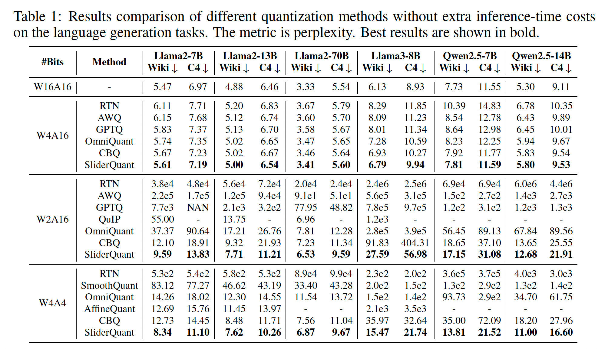
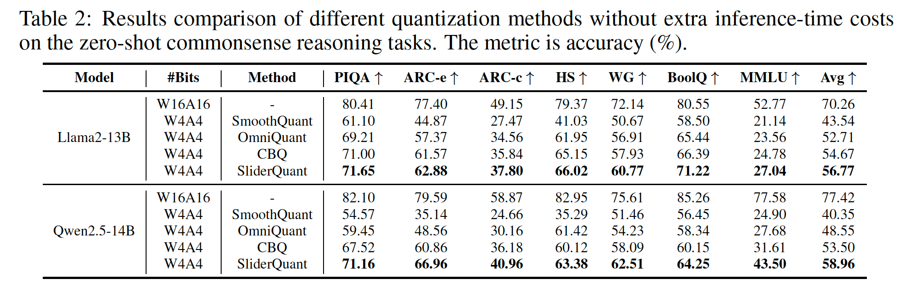
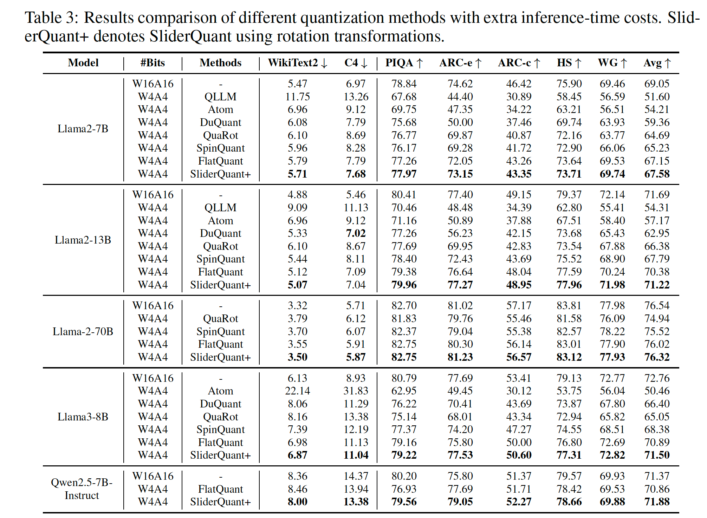
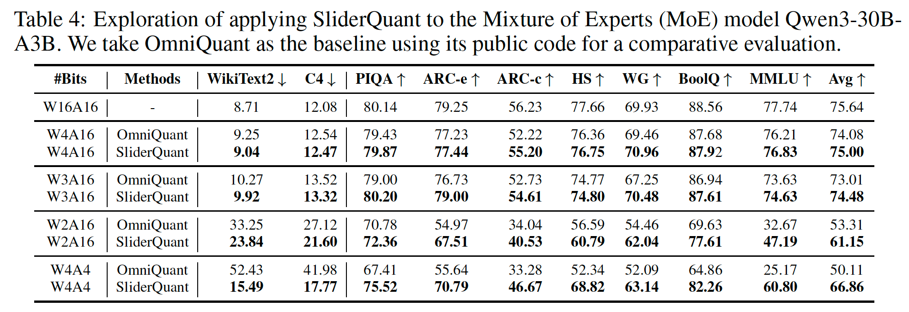
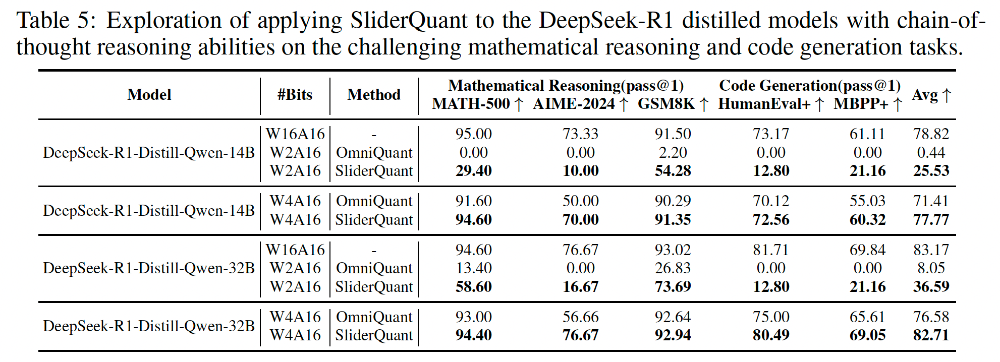

In this paper, we address post-training quantization (PTQ) for large language models (LLMs) from an overlooked perspective: given a pre-trained high-precision LLM, the predominant sequential quantization framework treats different layers equally, but this may be not optimal in challenging bit-width settings. We empirically study the quantization impact of different layers on model accuracy, and observe that: (1) shallow/deep layers are usually more sensitive to quantization than intermediate layers; (2) among shallow/deep layers, the most sensitive one is the first/last layer, which exhibits significantly larger quantization error than others. These empirical observations imply that the quantization design for different layers of LLMs is required on multiple levels instead of a single level shared to all layers. Motivated by this, we propose a new PTQ framework termed Sliding-layer Quantization (SliderQuant) that relies on a simple adaptive sliding quantization concept facilitated by few learnable parameters. The base component of SliderQuant is called inter-layer sliding quantization, which incorporates three types of novel sliding window designs tailored for addressing the varying quantization sensitivity of shallow, intermediate and deep layers. The other component is called intra-layer sliding quantization that leverages an incremental strategy to quantize each window. As a result, SliderQuant has a strong ability to reduce quantization errors across layers. Extensive experiments on basic language generation, zero-shot commonsense reasoning and challenging math and code tasks with various LLMs, including Llama/Llama2/Llama3/Qwen2.5 model families, DeepSeek-R1 distilled models and large MoE models, show that our method outperforms existing PTQ methods (including the latest PTQ methods using rotation transformations) for both weight-only quantization and weight-activation quantization under diverse bit width settings. Code is available at https://github.com/deep-optimization/SliderQuant.

Table 1: Language generation results.

Table 2: Zero-shot commonsense reasoning results.

Table 3: Methods with extra inference-time cost.

Table 4: MoE model results.

Table 5: DeepSeek-R1 distilled model results.
@inproceedings{wang2026sliderquant,
title={SliderQuant: Accurate Post-Training Quantization for LLMs},
author={Wang, Shigeng and Li, Chao and Kang, Yangyuxuan and Fan, Jiawei and Ou, Zhonghong and Yao, Anbang},
booktitle={International Conference on Learning Representations},
year={2026}
}